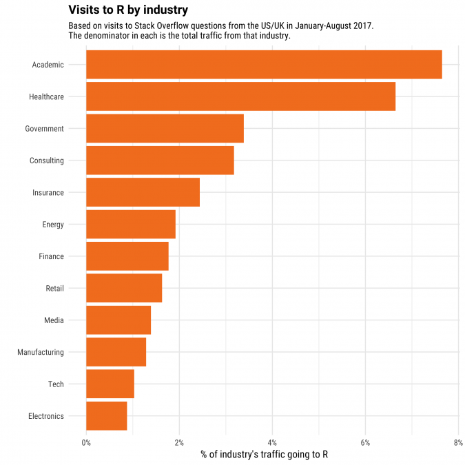
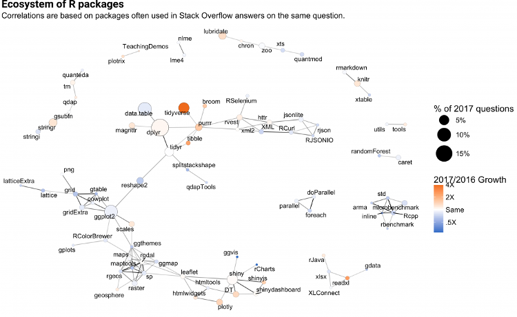

Have you taken a statistic course during college?
If yes, then you might have heard about R Programming.
If not, then now you’ll get to know more about it.
What is R?
R is an open source programming language for statistical computing and graphics. It is supported by R Foundation for Statistical Computing. Today, the R language is popular among statisticians, data science as a statistical, data analysis and data science tool.

Why R Programming?
R has a great eco-system for data manipulation, calculation, and graphical visualizations. It includes:
- an effective data handling and storage facility,
- a suite of operators for calculations on arrays, in particular, matrices,
- a large, coherent, integrated collection of intermediate tools for data analysis,
- graphical facilities for data analysis and display either on-screen or on hardcopy, and
- a well-developed, simple and effective programming language which includes conditionals, loops, user-defined recursive
- functions and input and output facilities.
Who uses R?
The companies like social media to search engine giants uses R.
- Facebook - For behavior analysis related to status updates and profile pictures.
- Google - For advertising effectiveness and economic forecasting.
- Twitter - For data visualization and semantic clustering
- Microsoft - Acquired Revolution R company and use it for a variety of purposes.
- IBM - Uses for internal business and analytical tools
The popularity of R by Industry
R has been widely used in industry. It’s become more popular every year.

R has CRAN
It’s one stopper package management system called CRAN (Comprehensive R Archive Network). It provides eco-system for R packages to make your work easier.

Beside this, R has lots of things you need to work with data. The R ecosystem is changing with expansion of data science field. In general, R language has contributed to its value as a programming language and as a data analysis environment.
If you want to work with data science, R can be your best tool to get started.